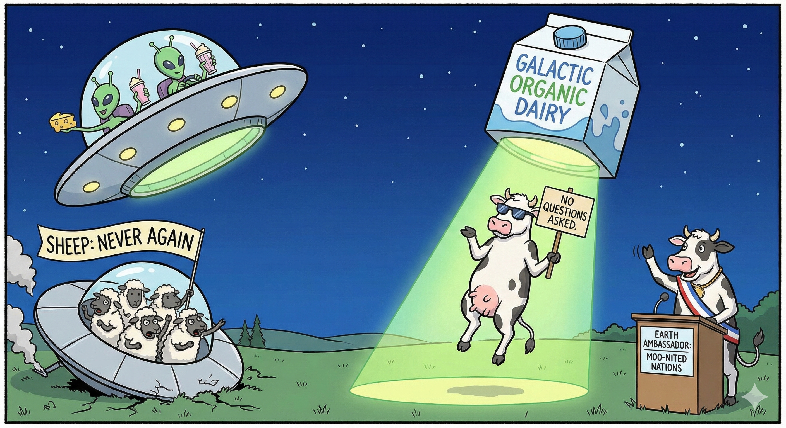
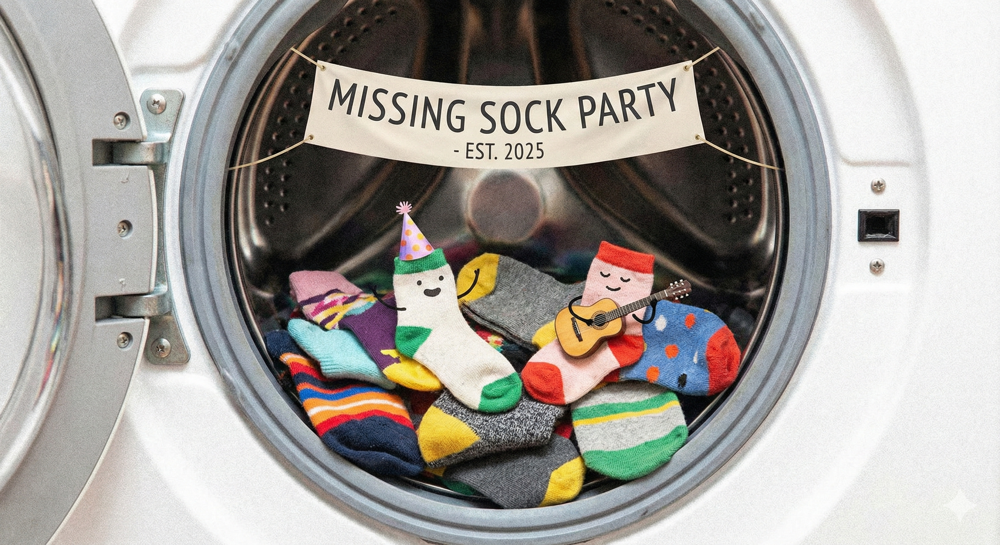

Confidencial
Un análisis multidisciplinario de la realidad absurda.
Presiona F11 para pantalla completa
¿Por qué los extraterrestres solo secuestran vacas?

"Las vacas firmaron un tratado intergaláctico en 1973 para representar a la Tierra, pero nadie se enteró porque lo hicieron en otras lenguas."
¿Cómo saber si tu gato es un alien infiltrado?
"Los aliens disfrazados de gatos tienen la tarea de evaluar el nivel de ternura de los humanos para determinar si somos adoptables como mascotas."
¿Por qué el Triángulo de las Bermudas se traga cosas?
"Todo lo que pasa cerca se lo empuja pa’ dentro sin preguntar, como si anduviera con antojo eterno. Ese hoyo no perdona… ni deja recibo."

¿A dónde van las medias que se pierden en la lavadora?
"La media no se perdió: simplemente se fue con su amante porque ahora se identifica como media de guaro. La lavadora solo fue la excusa perfecta."
¿Por qué los gatos tiran cosas de las mesas?
"El deporte favorito de los gatos es el 'tirar cosas de las mesas', en las olimpiadas de 1914, el atleta más destacado fue un gato llamado 'Michitler Führer'."
¿Cómo identificar si un duende está viviendo en tu casa?
"Si escuchas un gemido cerquita al oído, ya sabes que hay un duende en la casa: el man no paga arriendo, no lava platos y todavía se te pega por atrás a susurrarte como si fueran las 3 a.m. en un karaoke."
¿Por qué este es el pajaro quema Marías?
"Si se aparece por ahí, pilas que quema Marías."
¿Por qué se casó Adonay?
"La nena estaba empoderada y se sacó la verga, la puso en la mesa y se casó."
¿Por qué la cucaracha ya no puede caminar?
"Le dejaron partida la cucaracha"
¿Dudas? Consulta a tu gato (probablemente lo sabe todo).
Presiona F11 para pantalla completa